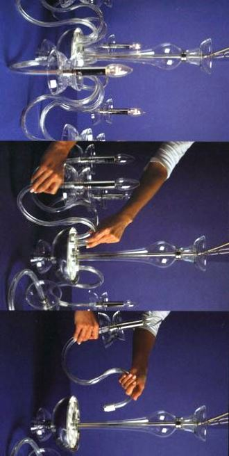

Качественный электромонтаж, Стаж 12 лет.
Тел. 8 904 642 08 57 Николай.
Николай.

Сборка люстр.
Трудно представить современный интерьер без целой системы люстры - от простых до самых сложных. Это и встроенные светильники, и навесные бра, и всевозможные, в том числе, масштабные и/или многоуровневые люстры. И все это "богатство" необходимо грамотно собрать, смонтировать и, конечно, подключить. Да, так, чтобы не возникало сложностей в процессе последующей эксплуатации.
А на это способен настоящий специалист - профессионал экстракласса.
Многим кажется, что собрать люстру - это просто, была бы инструкция к конструкции. Это далеко не так! Не то же самое, что вкрутить лампочку. Здесь нужны специальные знания. И бумажка со схемой сборки может оказаться совершенно бесполезной, если отсутствует навык.
Сколько стоит собрать люстру?
Количество люстр. |
1 |
2 |
3 |
4 штуки. |
Цена в руб. за 1 штуку. |
От 1200 |
1100 |
900 |
От 800 |
Что же касается стоимости сборки люстры, то она напрямую зависит от того, насколько сложную люстру придется собирать и подключать. И можете быть уверены, в том, что расценки, которые я озвучиваю, являются одними из самых невысоких на современном рынке.
Не беритесь самостоятельно на работы по электрификации помещений и не доверяйте этого ответственного дела своим родственникам, друзьям и знакомым. Такими вещами должен заниматься настоящий профессионал, мастер, и я готов предложить услуги потенциальным заказчикам.
Электрик по сборке люстр.
В общем, вам с вашей люстрой совершенно необходим мастер-электрик. И я готов предложить свои профессиональные услуги. Опытный высококвалифицированный специалист поможет вам в любых вопросах, связанных с электрификацией помещений различного назначения и различной же площади - городских квартир, загородных домов, коммерческих офисов и даже производственных цехов. Работаю быстро, качественно, с обязательной гарантией. И по привлекательным для клиентов расценкам.
Сборка люстр любой сложности - это, безусловно, сфера моих профессиональных интересов. Все, что я подключаю, в последующем эксплуатируется без проблем, с высокой степенью надежности и абсолютно безопасно!
Электрика не терпит дилетантов - ко всему, что связано с электричеством, должны прикасаться руки профессионалов.
Не рискуйте - позвоните мне!
Это непреложная истина, которую многие забывают, и напрасно. Ведь она напрямую связана с безопасностью людей, живущих или работающих в этом помещении, а также с функциональностью самого помещения. Поэтому не стоит экономить и пытаться самостоятельно собрать, закрепить и подключить световое оборудование. В том числе, люстры. Это чревато не только визуальным несовершенством, но и возможными эксплуатационными проблемами.
Если собираетесь делать ремонт в доме, не обойтись без создания, ремонта или замены электрической сети, к которой затем нужно подключить все необходимые осветительные приборы. Выбор светильников, безусловно, за вами, а вот доверять их сборку, монтаж и непосредственно подключение нужно, все-таки, профессионалам. Собрать люстру, даже не самую сложную, не так просто, как может показаться. Это требует специальных знаний, а также вполне определенных навыков и умений. Может быть, сборка люстр - это и не создание военной техники, но то же занятие, требующее квалификации. А также высокого профессионализма.
Тем более что современные люстры - это довольно сложные конструкции!
Как мастер-электрик я работаю с осветительными приборами давно, делаю это квалифицированно и всегда качественно. Гарантирую последующую безупречную эксплуатацию и великолепный внешний вид даже самых сложных в сборке люстр. Делаю все качественно, быстро и по привлекательной цене.
Если вам необходим качественный ремонт с профессионально осуществленной электрификацией помещения, обращайтесь.
Выезжаю на место проведения ремонтно-монтажных мероприятий незамедлительно, с поступлением звонка от потенциального заказчика.
На месте определяюсь с фронтом работ и озвучиваю предварительную стоимость. Она корректируется после того, как будет составлен подробный план-смета по электропроводке.
 Поменять проводку.
Поменять проводку. Сделать электрику в квартире.

Расценки на электропроводку квартир.
Провести электропроводку в новостройке.
Электромонтаж в частном доме.
Электрика в загородном доме.
Сколько стоит замена электропроводки в двухкомнатной квартире?.
Сколько стоит проводка в 3 ком квартире?
Сколько стоит проложить проводку в четырех комнатной квартире?
Сколько стоит сделать внутреннюю проводку?
Стоимость штробление стен.
Электромонтаж двухкомнатной квартиры.
Замена электропроводки в панельном доме.
Электромонтаж проводов в бане.